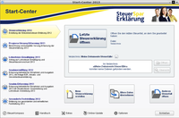
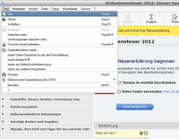

Steuer-Spar-Erklärung
Dieser Artikel wurde für die folgenden Ubuntu-Versionen getestet:
Dieser Artikel ist mit keiner aktuell unterstützten Ubuntu-Version getestet! Bitte diesen Artikel testen und das getestet-Tag entsprechend anpassen.
Zum Verständnis dieses Artikels sind folgende Seiten hilfreich:
Es gibt im Moment keine Steuerprogramme, die nativ unter Linux laufen. (siehe Wiki-Übersichtsartikel Finanzverwaltung). Wer trotzdem seine Steuererklärung am Linux-Rechner machen will, kann entweder ein Online-Steuerprogramm oder eines der Windows-Steuerprogramme unter Wine nutzen.
Bei Letzterem gibt es seit 2007 gute Erfahrungen mit der Steuer-Spar-Erklärung  . Sie kann kostenlos als Testversion installiert und benutzt werden. Einschränkung der Testversion: die fertig ausgefüllte und durchgerechnete Steuererklärung kann erst dann per ELSTER bzw. per ausgedruckten Formularen an das Finanzamt übertragen werden, wenn die kostenpflichtige Programmlizenz erworben wird, wobei die Lizenz immer nur für ein Jahr gültig ist. Die Lizenzierung erfolgt unkompliziert und sofort per Internet.
. Sie kann kostenlos als Testversion installiert und benutzt werden. Einschränkung der Testversion: die fertig ausgefüllte und durchgerechnete Steuererklärung kann erst dann per ELSTER bzw. per ausgedruckten Formularen an das Finanzamt übertragen werden, wenn die kostenpflichtige Programmlizenz erworben wird, wobei die Lizenz immer nur für ein Jahr gültig ist. Die Lizenzierung erfolgt unkompliziert und sofort per Internet.
Die Kompatibilität unter Wine ist laut des SSE-Artikels in der Wine-Datenbank  gut.
gut.
Installation¶
Die genaueste und aktuellste Beschreibung der Installation gibt es in der Datenbank von Wine . Dort bitte auch Probleme und Lösungen posten.

Wine installieren[1] und auf XP-Modus stellen.
Eine kostenlose, aktuelle Windows-Testversion
 (eine .exe-Datei) herunterladen (Name ähnlich SSEStandard_19.02.exe). Oder gleich eine Version mit kostenpflichtiger Lizenz downloaden und im "Windows-C-Ordner" ablegen. (~/.wine/drive_c).
(eine .exe-Datei) herunterladen (Name ähnlich SSEStandard_19.02.exe). Oder gleich eine Version mit kostenpflichtiger Lizenz downloaden und im "Windows-C-Ordner" ablegen. (~/.wine/drive_c).Nach dem Download dieser Datei muss sie über Wine[2] ausgeführt werden. Das passiert am besten über das Terminal[3] aus dem Ordner heraus, in dem die exe liegt, mit dem Befehl "
InstalWINEDLLOVERRIDES="ole32,oleaut32,msvcr100=n,b" wine SSEStandard_19.02.exe". Es erscheinen einige Meldungen, unter anderem auch auch Err-Meldungen, die nicht irritieren sollen. Es öffnet sich der WinZip Self-Extractor, die Vorgänge sind jetzt selbsterklärend. Details und weitergehende Tipps siehe im WineHQ-Artikel.Durch das Ausführen der SSEStandard_19.02.exe ist das Programm mit allen Komponenten in den Zielordner installiert worden, einschließlich der exe-Dateien für das StartCenter und das SSE-Programm selbst (z.B. SSE2014Portable.exe).
Normalerweise sollte aber nach der Installation auch ein Link als Starter auf dem Desktop angelegt sein. Falls nicht, ist er normalerweise als Steuer-Spar-Erklärung 2014 Portable.lnk in ~/.wine/drive_c zu finden und kann dann auf den Desktop kopiert werden. (Ansicht der verborgenen Dateien im Dateimanager anschalten!)
Falls sich das Programm nicht durch den gewohnten Klick/Doppelklick auf den Link öffnen lässt, sollte es über den Terminalbefehl "
wine /PFAD/ZUR/SSE20XYPortable.exe" zu öffnen sein.Starter anlegen (falls das nicht automatisch passiert ist): Um z.B. einen Starter im Menü "Büro" anzulegen, erstellt man mit einem Editor eine Datei, Name z.B. "steuerspar14.desktop", im Ordner ~/.local/share/applications mit folgendem Inhalt:
[Desktop Entry] Type=Application Name=Steuer-Spar-Erklärung 2014 Comment=Steuerprogramm für das Jahr 2013 Type=Application Exec=wine start 'C:\\SSE2014Portable\\SSEPortable.exe' Icon=/home/BENUTZERNAME/.wine/dosdevices/c:/SSE2014Portable/App/AppInfo/appicon_32.png StartupNotify=true StartupWMClass=SSEPortable.exe Categories=Office
Jahreszahlen, eventuell auch Ordner- und Bilderpfad entsprechend anpassen. Nach dem Abspeichern sollte der Menüeintrag sofort unter "Büro" zu finden sein (für LXDE getestet).
Alternative Installation über PlayOnLinux¶
Von Mai 2016 bis Januar 2017 ließ sich SteuerSparErklärung relativ bequem mit Hilfe von PlayOnLinux installieren. Seit Februar 2017 ist das Programm dort nicht mehr gelistet, es könnte sich aber lohnen, vor einer geplanten Installation in der Programmliste von PlayOnLinux nach dem Programm Ausschau zu halten. Falls es wieder aufgenommen wird, erleichtert das den Installationsprozess deutlich.
Auch ohne Downloadmöglichkeit über PlayOnLinux empfiehlt sich die Installation mit diesem Werkzeug, weil das Programm dann relativ leicht in einen eigenen Container installiert werden kann, was die regelmäßige Sicherung der aktuellen Programmversion vereinfacht. Diese ist besonders vor Updates notwendig, weil einzelne der herausgegebenen Programmversionen nicht unter Linux/Wine lauffähig sind.
Bedienung¶
Mit Doppelklick auf den Starter öffnet sich das Startcenter, auf dem sich unter anderem Schaltflächen für einen neuen Steuerfall und für die Datenübernahme aus älteren Jahrgängen finden. Normalerweise klickt man hier auf "Neue Steuererklärung erstellen" und gelangt dann auf die Oberfläche des eigentlichen Steuerprogramms. Die weitere Bedienung ist einfach und selbsterklärend.
Probleme¶
Probleme und ihre Lösungen werden im SSE-Artikels in der Wine-Datenbank ausführlich angesprochen. Bitte an dieser Stelle auch weitere Erkenntnisse posten. Bekannte und gelöste Probleme drehen sich um das Nicht-Funktionieren der Automatischen Aktualisierung, um den Zugriff auf das Handbuch und um den Versand mit ELSTER.
Support¶
Für Fragen zur Programminstallation oder -nutzung kann der Support des Anbieters kostenlos über Telefon oder E-Mail kontaktiert werden.

- Erstellt mit Inyoka
-
 2004 – 2017 ubuntuusers.de • Einige Rechte vorbehalten
2004 – 2017 ubuntuusers.de • Einige Rechte vorbehalten
Lizenz • Kontakt • Datenschutz • Impressum • Serverstatus -
Serverhousing gespendet von